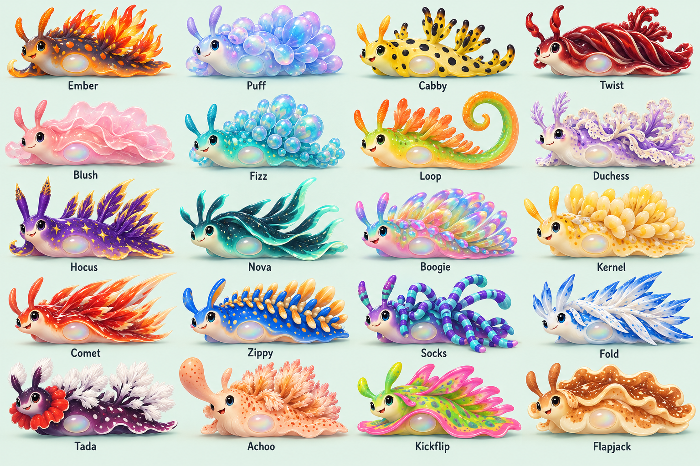

← Worm auditions
Cartoon animation study · 01 / 20
Puff's balloon mishap
A little too much confidence. A lot too much air.
PUFF
Loading Puff…
Pause
Repeat
Speed
Normal
Slow motion
Motion ON
Inspect a pose
1 / 24
Loading the illustrated frames…
See the approved cast of twenty
